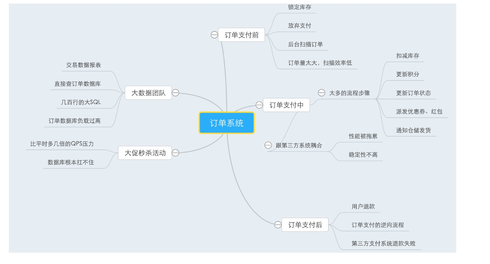

阶段性复习：
一张思维导图给你梳理高并发订单系统面临的技术痛点！
今天是我们第一个阶段的复习环节，我们已经把一个订单系统面临的各种技术问题都给大家分析的比较清晰了，因此我们会在这里对目前的技术问题做一个总结和梳理。
同时也给大家解释一下，为什么我们要加入阶段性复习的环节。
大家应该都知道，一般学习一个专栏持续的周期都比较长，通常都在三个月左右。这里有很多的原因，其中有作者的原因，也有用户的原因。
对作者来说，每周要在繁忙的工作之余（大家都知道，国内的互联网公司基本都是996的节奏）写作出几篇高质量的、精心打磨和修改的文章，其实是很耗费时间的。我们的专栏每篇文章都在3000字以上，这样一个篇幅的文章，从构思、到写作、到反复修改，起码要几个小时的时间。
因此对于作者来说，每周输出几篇高质量的文章，是一个非常正常平稳的写作节奏。
而对于用户来说，在学习上讲究的短频持续的学习。也就是说，假设现在给你一本书，让你每天看3个小时，连续一个月把他看完，你觉得会怎么样？
说实话，很多程序员都会囤书，买了一大堆的书，但是你数一数，你真正把一本书完完整整看完的，又有几本？
这里当然有一个很重要的原因，就是很多技术书籍较为枯燥乏味，让你顺流而下，一章一章阅读是很难坚持的，可能每本书都是坚持看了头三章，就看不下去了。
另外一个原因，人很难每天耗费几个小时干一个事情，并且连续坚持好几周，除非是在我们上学的时候，有老师逼着，有升学毕业的压力在，才会反人性这么干，但是正常来说，大家都不愿意这样子。
因此对一个读者而言，学习一个技术，每天都学习一个知识点，不耗费太多精力，是较为容易长期坚持下来的。
最理想的情况是，三个月后，发现自己不知不觉啃完了一个几十篇文章的完整专栏，并且里面的知识居然都看懂了，还有点意犹未尽，这个是作为作者最希望看到的情况
这就是站在一个学习者的角度而言，为什么跟着一个专栏用三个月的周期长期持续坚持是更好的。
但是这里同样也引入了一个问题：如果学习一个东西的周期持续那么长时间，势必导致有些人学到后面忘了前面，这是人之常情。
因为每个人都有记忆曲线，你看了一个东西，可能一周内记得很清楚，一个月后基本很模糊，半年后就彻底遗忘了。
所以针对这个问题，我在这个专栏里加入了一个阶段性复习的环节，每当学习完一个阶段，我都会用思维导图的方式梳理出你学习过的核心知识点
这样让各位经常可以对照思维导图快速回忆，有针对性的复习一下，那么就会一直保持对自己学过的东西的记忆。
当最后专栏全部结束了，我还会出一个针对整个专栏的大思维导图，让大家能够随时回忆出来3个月学习的一个成果。这样你以后在工作中用到这个技术了，还可以随时回到专栏里，对照思维导图快速复习。
这个阶段性复习的过程，是跟之前解释过的“授人以渔”的环节相辅相成，同样重要的
“授人以渔”的环节是用来训练大家的主动思考能力，让大家真正主动思考知识，消化知识，把知识融入到自己的工作里去，让学到的东西真正转化为你自己的东西，而不仅仅是对一些知识点死记硬背。
而阶段性复习过程，就是帮助大家不断的回忆和梳理学习过的东西，不断的反复记忆，避免遗忘，把学过的东西强化到自己的大脑里去。
因此，上述就是我设计阶段性复习环节的初衷，那接下来我们就来看看，我给大家梳理出来的第一个阶段的思维导图。

大家通过这个思维导图，立马就可以对学习过的知识一目了然，看到当前订单系统面临的一些核心的技术问题。
思维导图是一个非常好的工具，可以帮助你在大脑里存储一些知识的核心体系，让你记忆更加深刻。